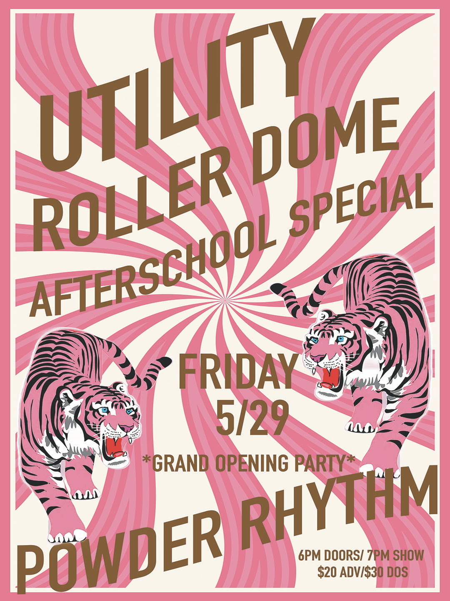

exhibit A. the poster in question
Saw a poster for a circus behind the bakery this morning on Resort. I think it's for a circus.
It says some words I understand and some words I'm still putting together. There's something called a Utility Roller Dome, which, okay. I'm not entirely sure what that is. A dome? That has something to do with rolling? Or a utility space that is, itself, dome-shaped? A dome for utilities? It could be any of these. It's a dome and that is genuinely all I need to know.
There's also something called an Afterschool Special, which I believe is a circus act. I think I've seen them before, like on TV when I was a kid. For children, probably, or for adults who still feel something shift in their chest when they see a really good performance. Which is me. And I suspect most people, if they're being honest about it. I hope whatever it is, is like that.
It says Grand Opening Party so this circus is opening. The grand is opening. Something is beginning. Something big. Something, and I want to be precise here, dome-shaped.
But here's the thing. Here is the thing. The thing is this:
There are two tigers on this poster.
Roaring. Blue eyes. Two of them. And they are looking directly at me like they have something important to communicate and that message is: "We will be there. On May 29th. In the Dome. Come and find us."
I haven't seen a tiger since I was a child. At a zoo, probably. Or in a vision. Probably. Memory is a strange thing, time is a strange thing, tigers are a strange and beautiful thing. Boy howdy, that's a lot of strange things. What I do know is that the feeling I had then, in my vision of a tiger at the zoo, that feeling of oh, something magnificent exists in the world... that is the exact feeling I am having right now looking at this poster.
It says May 29th. It says Baker City. It says something about six o'clock and seven o'clock and some numbers that I believe are the cost of admission to see what is almost certainly a glorious circus happening at a dome that rolls or is a dome for rolling or is simply a dome, majestic and round, in Oregon.
I will be there. I will see the tigers. I have never been more sure of anything in my life. I don't fully understand what an ADV is but I will proably go for the DOS for $10 more because the tigers are waiting and the dome is opening and Powder Rhythm is involved somehow and all of that together means this is where I need to be.
May 29th. The circus tigers are coming to Baker City.
Has this happened a ton of times but this is the
first time someone put up a poster about it.
I doubt it